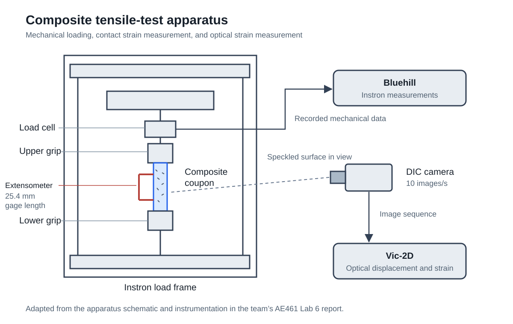
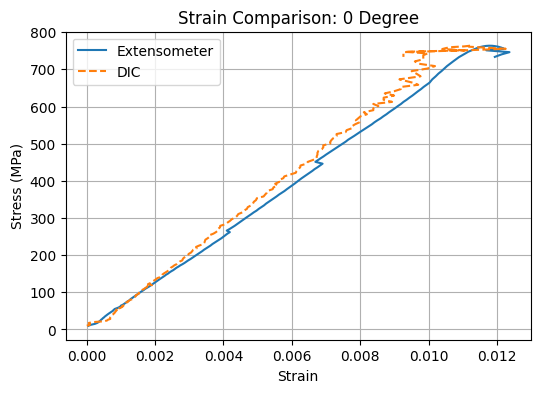
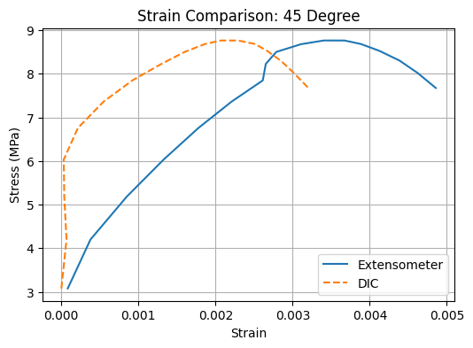
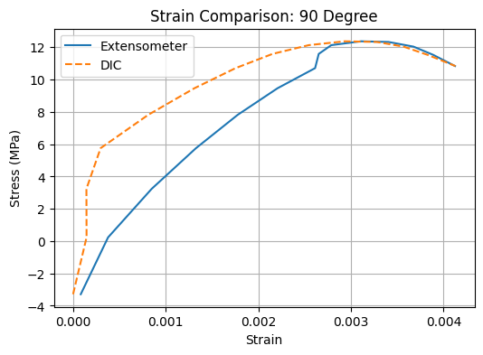

12 / Composite materials testing / Completed laboratory study
AE461 · Four-person laboratory team
Comparing composite tensile behavior with extensometer and DIC strain
The objective was to connect how graphite/epoxy coupons were manufactured and oriented with how they actually carried tensile load. I prepared the stress–strain comparisons and weight-normalized properties, and documented the apparatus, manufacturing history, and uncertainty. The tests established strong directional behavior, while substantial differences from theoretical stiffness and failure loads made measurement quality and model assumptions central to the story.
- My contribution
- Stress–strain comparisons, specific properties, apparatus and uncertainty documentation, and manufacturing-quality discussion
- Tools
- Composite materials · Tensile testing · Digital image correlation · Experimental uncertainty
- Outcome
- 0° coupon reached 807.7 MPa; directional trends were clear, but ideal predictions did not match quantitatively

Compare three orientations and two strain measurements
The team manufactured and tested coupons with fibers aligned with the load, transverse to it, and at ±45°. An Instron load frame pulled the tabbed coupons to failure. Measured force, width, and thickness gave engineering stress; a 25.4 mm extensometer supplied axial strain during initial loading.
A camera also recorded the speckled coupon surface at 10 images per second for Vic-2D digital image correlation (DIC). The optical method measured strain in a selected region, while the extensometer averaged strain over its gage length. Using both made the strain measurement itself part of the comparison.
Turn two data streams into comparable curves
My assigned stress–strain section compared both methods for all three orientations. The recovered team Python script reads Instron specimen metadata, converts force and area to stress in MPa, and aligns the DIC image sequence with the Instron record using a linear time mapping. It plots the response up to peak load and filters obvious failed-correlation outliers.
That synchronization is approximate. Near fracture, cracks and rapid local deformation reduced optical correlation quality; the extensometer was removed before final failure to protect it. Those practical limits matter when interpreting the end of the curves. The published code preserves the analysis for inspection, but the complete input time histories were not recovered, so no fresh processing run is claimed.


Make the weight comparison explicit
I also calculated specific modulus and specific strength by dividing the measured properties by an approximate cured density of 1530 kg/m³. For the 0° coupon, the report gives 44.86 MN·m/kg specific modulus and 527.9 kN·m/kg specific strength. These are normalized estimates using the stated density assumption, not separately measured material allowables.
My apparatus and uncertainty sections identified thickness variation, specimen alignment, grip or tab effects, optical region selection, and image quality as important influences. My earlier manufacturing-history sections covered quality, lay-up temperature and humidity, and the cure cycle. These establish plausible sources of variation; they do not isolate the cause of each discrepancy.
Establish the trend and explain the limits
0° coupon: 68.64 GPa extensometer modulus and 807.7 MPa ultimate tensile strength.
The 0° specimen was stiffest and strongest, the 90° specimen was weakest in tension, and the ±45° specimen reached the largest strain before failure. The 0° DIC modulus was 84.53 GPa: closer to the theoretical 156.78 GPa than the extensometer value, but still substantially lower.
The team’s failure-load comparison showed 48.27 kN measured against 115.34 kN predicted at 0°, and 1.74 against 4.18 kN at 90°. The ±45° specimen instead carried 7.40 kN against a 4.49 kN prediction. The report describes the failure model as conservative for that tested shear-dominated case, rather than generally accurate for every orientation.


My contribution and the engineering evidence
The report specifically credits me with stress–strain curves, specific-property calculations, apparatus and uncertainty documentation, and manufacturing-quality and cure-history discussion. It assigns primary modulus and strength extraction to E. Bennett, off-axis properties and failure-load predictions to A. Alptekin, and laminate constants and modulus comparisons to S. Konakanchi.
My contribution demonstrates translating test records into meaningful comparisons while documenting how the measurements were made and what assumptions bound the conclusion. The result is an experimentally supported account of directional composite behavior and its uncertainty, rather than a qualification claim or proof that ideal predictions match manufactured coupons.

